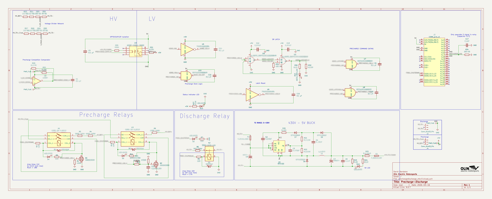

Formula SAE Precharge/Discharge PCB
Designed a 400V-class precharge/discharge control PCB for a Formula SAE EV tractive system. The board coordinates staged relay sequencing, high-voltage threshold detection, and safety logic so the inverter DC-link capacitor charges in a controlled way before full pack connection.

PCB render of the precharge/discharge controller used to manage staged high-voltage startup and shutdown.
Overview
As part of Olin Electric Motorsports, I designed a precharge/discharge controller PCB for the car’s high-voltage accumulator system. Its role is to connect the tractive system to the inverter in a controlled sequence by first charging the DC-link capacitor through a precharge path before allowing full pack connection.
This was a safety-critical design shaped by system-level constraints, not just circuit functionality. The board needed to coordinate relay control, threshold-based transitions, and safe default behavior while fitting within the broader Formula SAE EV architecture and its HV/LV isolation requirements.
Images

Schematic overview showing relay sequencing, sensing, and protection logic across the board.
My Contributions
- Designed a 400V-class precharge/discharge control PCB for a Formula SAE EV high-voltage system.
- Implemented two-stage precharge sequencing to charge the inverter DC-link capacitor in a controlled manner before full connection.
- Designed safety/interlock logic for relay coil drive, threshold-based transitions, and startup/shutdown control.
- Developed latch/reset behavior so the precharge-done state initializes cleanly and avoids unsafe startup conditions.
- Completed PCB layout in KiCad while balancing relay footprint constraints, HV/LV isolation, and rule-driven packaging requirements.
Technical Highlights
The board implements a two-stage precharge process rather than switching the tractive system on directly. In the first stage, the inverter DC-link capacitor charges through a resistor path to limit inrush current. Once the system reaches the required threshold, the second stage completes the transition toward normal operation in a controlled and repeatable way.
A major part of the design was the safety and state-management logic around threshold detection and latch behavior. I worked on capturing and holding the “precharge done” condition during the active precharge window while still guaranteeing a deterministic reset when precharge is inactive. That reset behavior was important because the board needed predictable startup behavior rather than relying on undefined latch state at boot.
I also designed around safe defaults at the logic level so that missing or floating command conditions would not produce unsafe relay behavior. This required shaping the control logic so the board behaved predictably during both enable and shutdown events.
Beyond the schematic, the project required careful PCB layout for a mixed HV/LV system. I worked within the board area imposed by the relay footprints while maintaining HV/LV separation and organizing the layout so the high-voltage and low-voltage regions remained clearly separated and practical to manufacture.
Design Constraints and Challenges
One of the hardest parts of the project was PCB layout. The relays imposed strong size and placement constraints, which made routing and board organization much harder than a typical low-voltage board. At the same time, the layout had to preserve HV/LV separation and reflect the isolation requirements expected in a Formula SAE EV system.
Another major challenge was refining the latch logic to account for edge cases and ensure the SR latch always had a guaranteed reset condition. That pushed the design beyond a simple functional schematic and into failure-mode thinking, where deterministic behavior during startup and shutdown mattered just as much as nominal operation.
Tools and Skills
Tools: KiCad
Skills: PCB Design, High-Voltage System Design, Relay Sequencing, Safety/Interlock Logic, HV/LV Isolation, Datasheet-Driven Design, Design Review, Formula SAE Rule-Constrained Design
Project Status
The schematic and PCB layout are complete, and the board has been ordered. Current work is focused on bring-up preparation and planning validation of threshold detection, sequencing behavior, and integration into the vehicle’s high-voltage system.